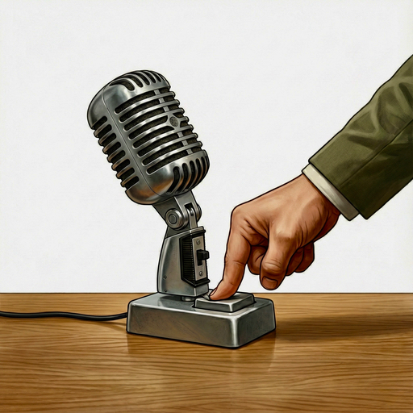

Offline dictation for the Mac
Push to talk. Nothing leaves your Mac.
Hold a key, speak, let go. Your words appear wherever you were typing, transcribed on your Mac a few hundredths of a second after you let go.

Measured, not claimed
Done before you look up.
Cloud dictation sends your voice to a server and waits for it to come back. PUSH never leaves the building, so the text is there the moment you let go.
Median of 13 readings of the same 25-second passage · 30 Sep 2026 · Mac mini (M4). PUSH shown with Parakeet Ultra; Parakeet Streaming, the default on English Macs, measured 0.02 s. PUSH transcribes as you speak; times run from letting go of the key. Wispr Flow = 0.74 s server processing + 0.13 s network. How we measured →
Private by design
Your voice never leaves your Mac.
There's no server to trust, because there's no server. The speech model runs on your Mac's Neural Engine, and your audio is thrown away the moment it becomes text.
No cloud
Speech recognition runs entirely on your Mac. Nothing you say is uploaded, stored or used for training.
No account
No sign-up, no login, no analytics. Buy it, enter your key, start talking.
Works offline
On a plane, in a basement, on hotel Wi-Fi that isn't really Wi-Fi. It only needs the internet once, to download a model.
Syncs across your Macs
Your dictionary and settings follow you to every Mac through your own iCloud. Never through us.
Cleans up as you go
Say it how you say it. Get it how you'd type it.
You change your mind
“The red car, I mean the blue car”
The blue car
Numbers, the way you'd write them
“um, four thirty PM … five million dollars”
4:30 p.m. · $5 million
Quotation marks, out loud
“She replied: quote, not today, end quote.”
She replied: "Not today."
Lists on request
“Number one, milk. Number two, eggs. Number three, bread.”
1. Milk 2. Eggs 3. Bread
Works in every app you type in
Mail, Slack, Notes, your code editor, a browser form. If there's a cursor, PUSH can fill it.
Knows your words
Teach it the names and jargon it keeps mishearing. Your dictionary follows you to every Mac through your own iCloud.
For creators: a teleprompter
On your screen. Not in your video.
Record your screen and the prompter isn't in the shot. Your viewers see you and your demo, never the script.
Paste your script and it hangs just under the notch, right by the camera, so your eyes stay on the lens. It scrolls because it heard you say the words, at whatever pace you read, and holds still when you stop or go off-script.
- Follows your voice and marks the exact word you're on
- Or a steady scroll at 60–400 words a minute
- Arrow keys nudge lines and change speed
Everything it does
Small app. Lots of thought.
Watch it listen
With Parakeet Streaming, the default in English, your words stream into the pill while you're still talking, so you know it heard you before you let go.
Pick your key
Option, Command or Control, left or right. Hold it to talk, let go to paste. Esc cancels mid-sentence.
Or just say the word
Pick a wake word and start dictating hands-free. It stops by itself after a second of silence.
Put the pill where you look
Hanging from the notch, or floating at the bottom of the screen. Three sizes.
While you talk
- Lowers other apps' volume, then restores it
- Choose which microphone to use
- Optional sound when recording starts
Cleaning up
- Drops “um” and “uh”
- Follows “I mean”, “no wait”, “scratch that”
- Times, money and percentages, typed properly
- Say “quote … end quote” and get real quotation marks
- “New line”, “new paragraph”, bullets and numbered lists
- Adds the question mark the model forgot
- Two spaces after a full stop, if that's how you type
- California mode, if you need it
Your words
- Personal dictionary for names and jargon
- Fixes that apply always, or only in context
- Syncs across your Macs through your own iCloud
- English plus about 25 languages detected automatically, with Parakeet Ultra
- Switch language from the menu bar
Stays out of the way
- Lives in the menu bar, no Dock icon
- Opens at login if you like
- Three on-device speech models to choose from
- Updates itself quietly
- A guided setup on first launch
Made in Los Angeles
California mode
One switch takes the "like" out of your sentences. It was, like, made by someone who needs it.
“So like I went to the store and like bought milk. It was, like, amazing. We should like totally go back. Let's like take the 405.”
“So I went to the store and bought milk. It was amazing. We should totally go back. Let's take the 405.”
It knows the difference. These stay:
Speaks your language
English and about 25 European languages, detected as you speak with Parakeet Ultra. Chinese, Japanese, Arabic, Hindi, Russian, Greek and more with the multilingual model.
Pricing
Pay once. Talk forever.
No subscription, no word limits, no tiers. Every update we ship for PUSH on the Mac is included.
For comparison: a year of Wispr Flow Pro is $144.
- Up to 3 Macs
- Every future update included
- All three speech models
- 14-day refund, no questions
Checkout opens at launch. More Macs? $10 each. Taxes handled by Polar.
Questions
Does it need the internet?
Once, to download a speech model (about 600 MB). After that, dictation works with Wi-Fi off.
Which Macs?
Any Apple silicon Mac (M1 or later) on macOS 15 or newer.
What does “every update” mean?
Every version of PUSH for the Mac we release, free, for as long as we make it. No paid upgrades, no subscription.
Is it really private?
Your audio and transcripts never leave your Mac. The privacy policy lists the few things that do connect: model downloads, update checks, licence checks with Polar and optional iCloud sync.
What if it's not for me?
Email us within 14 days for a full refund. No questions, no forms.
Buying for a team?
One licence per person. Write to us for 10 or more and we'll sort out a volume price.